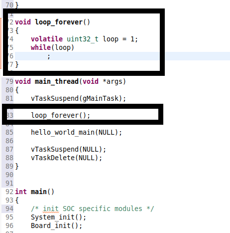
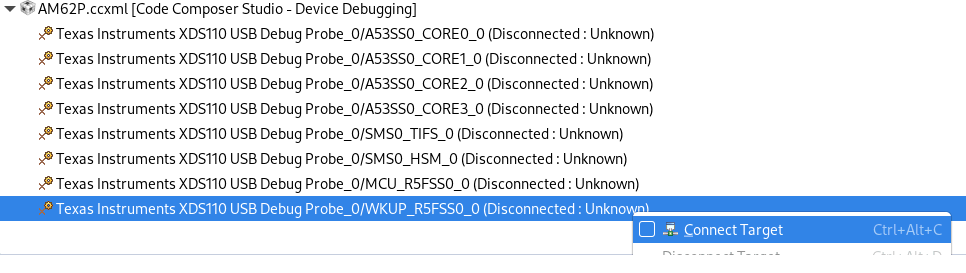
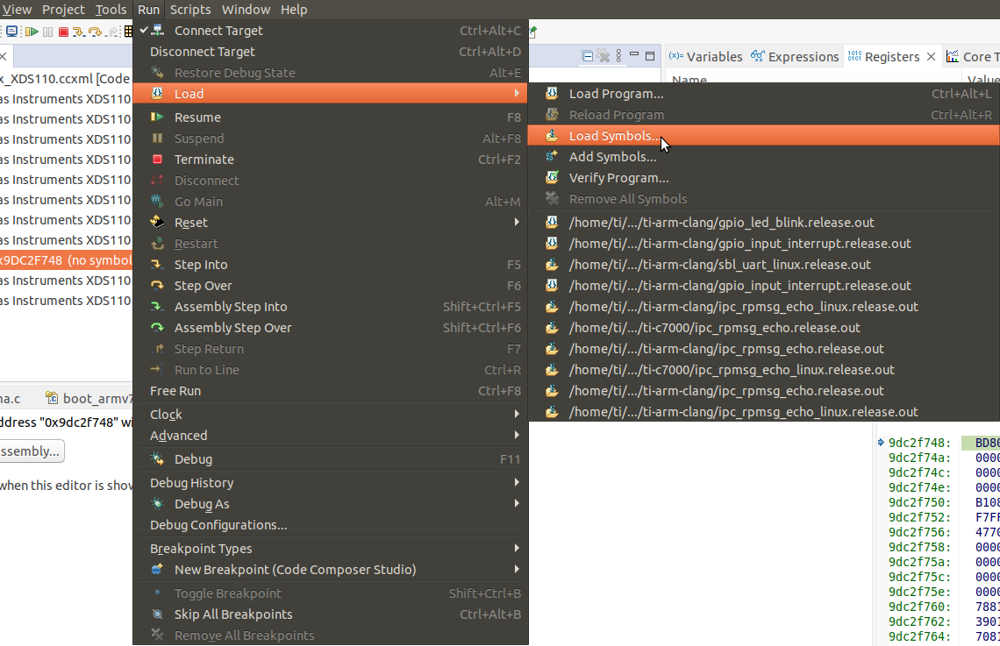
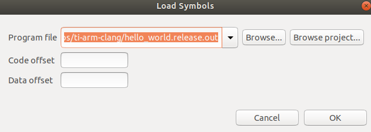
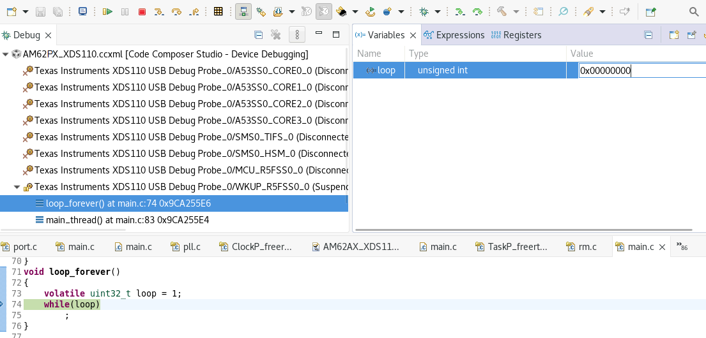

- Attention
- It is recommended to use the TIFS version provided with the release for ensuring compatibility between TIFS and device manager. Using the TIFS from different MCU+ SDK release is not recommended and may cause TIFS/ DM functionality to break.
Introduction
- Attention
- DeepSleep low power mode (LPM) is not supported if the DM R5 is used for a general purpose application. This is because when the SoC goes to any LPM, the context of peripherals used by DM R5 will be lost. To use DM R5 for a general purpose application, disable LPM support. Refer Disabling Low Power Mode to know how to disable LPM.
The wake-up R5 (or) device manager(DM) R5 core is responsible for running the DM firmware. The DM firmware is responsible for resource management and power management.
The DM firmware requires following components (as libraries) to be included in the application.
- "rm_pm_hal" consists of the calls for processing resource and power management.
- "sciserver" receives the TI_SCI messages from other cores and processes it.
- "sciclient_direct" calls the rm_pm_hal or sends the messages to TIFS based on the TI_SCI request.
- "self_reset" contains the entry point of the DM firmware application. It resets the DM R5 and enables the TCMA.
- "dm_stub" enables low power mode features.
As the DM firmware requires multiple threads, it requires an RTOS. So any application on DM R5 should start the SCI server on a thread and actual application can be run on a different thread. Refer main.c of any r5fss0-0 example application to see how to implement this.
- Attention
- As the wake-up R5 is the device manager, it needs to be started by the SBL. So it can not be loaded through CCS. It should be flashed and booted through SBL.
- DM firmware needs to be multi-threading/rtos application as it creates multiple threads during initialization.
- DM firmware as part of initialization via self_reset library swaps TCM configuration to have ATCM at 0x41010000 and BTCM at 0x0.
DM R5 Logging Configuration
DM R5 application logging (including Sciserver, Sciclient Direct, and IPC logs) is controlled through SYSFW board configuration trace settings.
Default Configuration:
trace_dst_enables = TISCI_BOARDCFG_TRACE_DST_UART0 | TISCI_BOARDCFG_TRACE_DST_ITM | TISCI_BOARDCFG_TRACE_DST_MEM (UART, CCS Console, and Memory destinations enabled)trace_src_enables = TISCI_BOARDCFG_TRACE_SRC_USER (USER source enabled)- DM R5 application logs will appear on all destinations, i.e WKUP UART, CCS Console, and memory buffer by default
- TIFS logs and DM PM/RM logs remain disabled
- This provides basic debugging capability without overwhelming UART traffic from verbose PM/RM or TIFS logs
Benefits of Board Configuration Control:
- Flexibility: Modify log settings by changing board configuration without rebuilding DM firmware (firmware loads configuration at runtime)
- Fine-grained control: Independent control of each trace source (PM, RM, SEC, BASE, USER, SUPR) for selective component logging
- Multi-destination support: Route logs to multiple destinations simultaneously (e.g., UART + MEM)
- Consistency: All logging control centralized in board configuration files
Refer to the TIFS and DM Trace Enable section in the SYSFW Tools documentation to modify the default logging mechanism.
Build and load DMR5 examples
Debugging an application on DMR5 core
- Once the DM R5 is booted through SBL, symbols can be loaded through CCS for loading. Follow the below steps to debug any application developed for DM R5.
- Insert an infinite loop before the start of the test application.

Insert infinite loop
- Connect to WKUP-R5 core for debugging.

Connect to DMR5 Core
- Load the symbols for the test application.

Load Symbols for debug
- Navigate to the ".out" file generated by the test application.

Navigate to the ELF
- In the CCS Debug Perspective's Expressions window, enter the loop variable and update its value to 0.

Update expression value
- Continue with the debugging process as usual.
Disabling WKUP_UART access for DM Logging
To completely disable WKUP_UART access for DM logging (e.g., to use WKUP_UART from other cores), set both trace destination and source to 0 in the board configuration.
In source/drivers/sciclient/sciclient_default_boardcfg/{SOC}/sciclient_defaultBoardcfg.c, edit the .debug_cfg section:
.trace_dst_enables = 0,
.trace_src_enables = 0,
Then rebuild and reflash the board configuration as explained in SYSFW Board Config Generation section.
For more configuration examples and details, refer to TIFS and DM Trace Enable.
 1.8.20
1.8.20